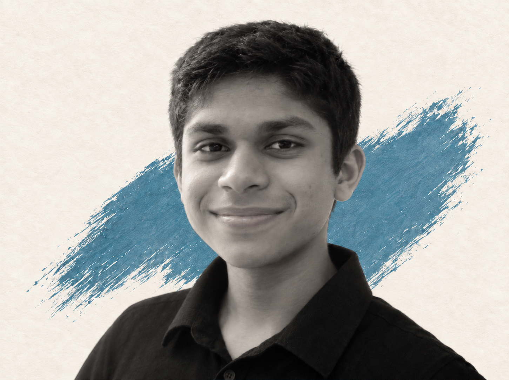

Hello, I’m Naman.
Student researcher,
builder, and musician.
I explore computation across science, engineering, and sound—building tools, asking questions, and turning ideas into impact.
- Based in
- Silicon Valley
- Studying
- CS, robotics & science

Selected projects
Featured Work
Competition Prep · Learning Tools
STEAMCOACH
Adaptive practice for Science Bowl, Science Olympiad, F=ma, USNCO, math, and music—built around timed simulations and purpose-built question generation.
Explore STEAMCOACH- ✓ Math ForgeLive
- ✓ SBReaderLive
- ✓ SciOly HelpLive
- ✓ USNCO · F=maLive
- ○ Piano CoachPlanned
Machine Learning · Music Tech
Music Recommendation Systems
Learning from listening behavior and musical structure to recommend songs for real empathy concerts.
Read the research
Robotics · Embedded Systems
Robotic Piano Player
From voltage dividers and PWM to a fast, reliable servo-driven instrument.
See the buildBuildingSTEM learning tools
StudyingAI, chemistry & physics
ComposingOriginal piano works
Field notes & ideas
Writing
A New Side of Recommendation: Classical DSP
Building an explainable similarity system around melody, harmony, rhythm, and emotion.
6 min readOn Noteflight and Notation Software
A comparison of notation tools through the lenses of UX, performance, and openness.
5 min read